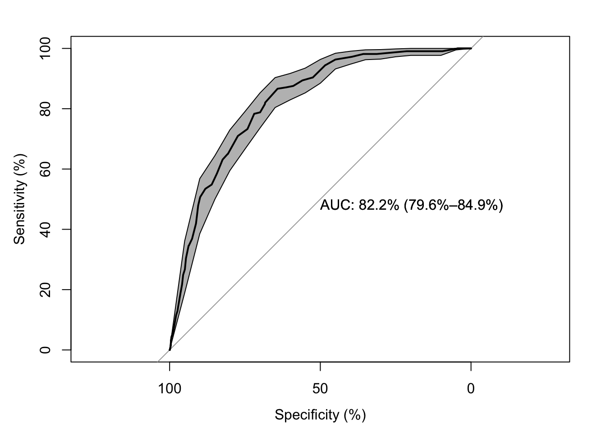
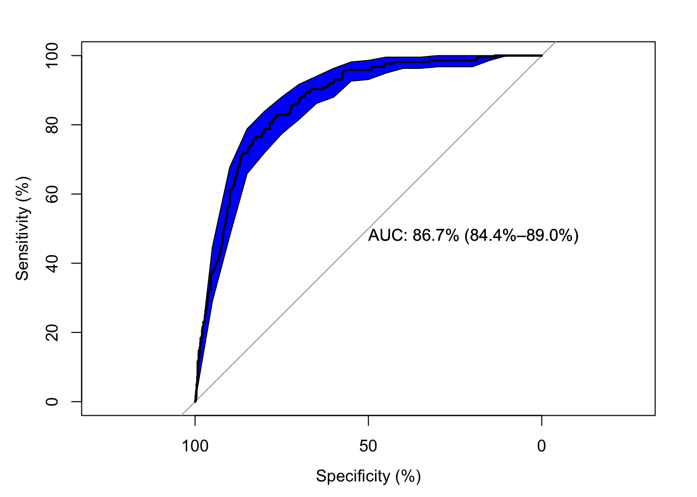

Type 'citation("pROC")' for a citation.
Attaching package: 'pROC'The following objects are masked from 'package:stats':
cov, smooth, varLoading required package: ggplot2Loading required package: latticeMachine learning, a dynamic field at the intersection of computer science and statistics, is empowered by diverse algorithms designed to make sense of data. One of the foundational tasks within machine learning is classification - a process that assigns predefined labels or categories to input data. In this blog post, we will embark on a journey to unravel the intricacies of classification in machine learning (using R), exploring its significance, techniques, and applications.
Classification is a supervised learning technique where the algorithm learns from labeled training data and predicts the labels of unseen or new data points. In essence, it is the process of mapping input data to predefined classes.
Classification plays a pivotal role in a myriad of applications in this day and age:
Despite the name, logistic regression is a classification algorithm used for binary classification problems. It models the probability of an instance belonging to a particular class.
Decision trees are tree-like structures where each node represents a decision based on a feature. They recursively split the dataset to create a tree that predicts the class label.
SVM is a powerful algorithm for both binary and multiclass classification. It aims to find the hyperplane that best separates different classes in feature space.
Random Forest is an ensemble learning method that constructs multiple decision trees during training and outputs the class that is the mode of the classes (classification) or mean prediction (regression) of the individual trees.
A confusion matrix is a table that describes the performance of a classification model. It summarizes the number of true positive, true negative, false positive, and false negative predictions.
These metrics provide a more detailed assessment of a classification model’s performance:
In this blog, we will be using a `Wine Quality’ dataset to apply some classification techniques, mainly Logistic Regression and Decision Trees.
Type 'citation("pROC")' for a citation.
Attaching package: 'pROC'The following objects are masked from 'package:stats':
cov, smooth, varLoading required package: ggplot2Loading required package: lattice fixed.acidity volatile.acidity citric.acid residual.sugar chlorides
1 7.4 0.70 0.00 1.9 0.076
2 7.8 0.88 0.00 2.6 0.098
3 7.8 0.76 0.04 2.3 0.092
4 11.2 0.28 0.56 1.9 0.075
5 7.4 0.70 0.00 1.9 0.076
6 7.4 0.66 0.00 1.8 0.075
free.sulfur.dioxide total.sulfur.dioxide density pH sulphates alcohol
1 11 34 0.9978 3.51 0.56 9.4
2 25 67 0.9968 3.20 0.68 9.8
3 15 54 0.9970 3.26 0.65 9.8
4 17 60 0.9980 3.16 0.58 9.8
5 11 34 0.9978 3.51 0.56 9.4
6 13 40 0.9978 3.51 0.56 9.4
quality
1 5
2 5
3 5
4 6
5 5
6 5In this data set the first 11 are the objective variables that measure different chemical aspects of different wines. The 12th dimension quality is the output variable, the one we are trying to predict.
To make the classification simpler, we are going to put the quality column into categories. A quality score of 3 or 4 will be classified as Low, 5 or 6 as Medium and & or 8 as High.
wine$low <- wine$quality <= 4
wine$medium <- wine$quality == 5 | wine$quality == 6
wine$high <- wine$quality >= 7
head(wine) fixed.acidity volatile.acidity citric.acid residual.sugar chlorides
1 7.4 0.70 0.00 1.9 0.076
2 7.8 0.88 0.00 2.6 0.098
3 7.8 0.76 0.04 2.3 0.092
4 11.2 0.28 0.56 1.9 0.075
5 7.4 0.70 0.00 1.9 0.076
6 7.4 0.66 0.00 1.8 0.075
free.sulfur.dioxide total.sulfur.dioxide density pH sulphates alcohol
1 11 34 0.9978 3.51 0.56 9.4
2 25 67 0.9968 3.20 0.68 9.8
3 15 54 0.9970 3.26 0.65 9.8
4 17 60 0.9980 3.16 0.58 9.8
5 11 34 0.9978 3.51 0.56 9.4
6 13 40 0.9978 3.51 0.56 9.4
quality low medium high
1 5 FALSE TRUE FALSE
2 5 FALSE TRUE FALSE
3 5 FALSE TRUE FALSE
4 6 FALSE TRUE FALSE
5 5 FALSE TRUE FALSE
6 5 FALSE TRUE FALSEFor the classification techniques here we will use two approches/models - one using just the alcohol level and one with more than one variable.
For the first model, we will narrow out down to just being interested in High quality wines.
log1_high <- glm (high~alcohol, data=wine, family=binomial(link='logit'))
log2_high <- glm(high~alcohol + volatile.acidity + citric.acid + sulphates, data=wine, family=binomial(link='logit'))
summary(log1_high)
Call:
glm(formula = high ~ alcohol, family = binomial(link = "logit"),
data = wine)
Coefficients:
Estimate Std. Error z value Pr(>|z|)
(Intercept) -13.23466 0.84022 -15.75 <2e-16 ***
alcohol 1.05057 0.07486 14.03 <2e-16 ***
---
Signif. codes: 0 '***' 0.001 '**' 0.01 '*' 0.05 '.' 0.1 ' ' 1
(Dispersion parameter for binomial family taken to be 1)
Null deviance: 1269.9 on 1598 degrees of freedom
Residual deviance: 1027.9 on 1597 degrees of freedom
AIC: 1031.9
Number of Fisher Scoring iterations: 5
Call:
glm(formula = high ~ alcohol + volatile.acidity + citric.acid +
sulphates, family = binomial(link = "logit"), data = wine)
Coefficients:
Estimate Std. Error z value Pr(>|z|)
(Intercept) -13.1586 1.1252 -11.694 < 2e-16 ***
alcohol 1.0114 0.0814 12.424 < 2e-16 ***
volatile.acidity -3.5839 0.6854 -5.229 1.70e-07 ***
citric.acid 0.9378 0.5270 1.780 0.0751 .
sulphates 2.4424 0.4488 5.442 5.27e-08 ***
---
Signif. codes: 0 '***' 0.001 '**' 0.01 '*' 0.05 '.' 0.1 ' ' 1
(Dispersion parameter for binomial family taken to be 1)
Null deviance: 1269.92 on 1598 degrees of freedom
Residual deviance: 914.11 on 1594 degrees of freedom
AIC: 924.11
Number of Fisher Scoring iterations: 6Looking at the AIC (Akaike information criterion), which gets lower as the model gets better, we can see that combining variables together prove to be better classifying model than just using the alcohol variable. Next, we will make some predictions and use some visualizations to assess the two models.
Setting levels: control = FALSE, case = TRUESetting direction: controls < cases
Setting levels: control = FALSE, case = TRUE
Setting direction: controls < cases
These visualizations further support our claim that the second model with more variables is better (the higher the AUC the better the model is).
Call:
rpart(formula = high ~ alcohol + sulphates, data = wine, method = "class")
n= 1599
CP nsplit rel error xerror xstd
1 0.08294931 0 1.0000000 1.0000000 0.06311025
2 0.01000000 2 0.8341014 0.8341014 0.05838395
Variable importance
alcohol sulphates
74 26
Node number 1: 1599 observations, complexity param=0.08294931
predicted class=FALSE expected loss=0.1357098 P(node) =1
class counts: 1382 217
probabilities: 0.864 0.136
left son=2 (1349 obs) right son=3 (250 obs)
Primary splits:
alcohol < 11.55 to the left, improve=54.87599, (0 missing)
sulphates < 0.675 to the left, improve=33.01760, (0 missing)
Node number 2: 1349 observations
predicted class=FALSE expected loss=0.07931801 P(node) =0.8436523
class counts: 1242 107
probabilities: 0.921 0.079
Node number 3: 250 observations, complexity param=0.08294931
predicted class=FALSE expected loss=0.44 P(node) =0.1563477
class counts: 140 110
probabilities: 0.560 0.440
left son=6 (136 obs) right son=7 (114 obs)
Primary splits:
sulphates < 0.685 to the left, improve=19.8989200, (0 missing)
alcohol < 12.05 to the left, improve= 0.5101698, (0 missing)
Surrogate splits:
alcohol < 13.25 to the left, agree=0.592, adj=0.105, (0 split)
Node number 6: 136 observations
predicted class=FALSE expected loss=0.2573529 P(node) =0.08505316
class counts: 101 35
probabilities: 0.743 0.257
Node number 7: 114 observations
predicted class=TRUE expected loss=0.3421053 P(node) =0.07129456
class counts: 39 75
probabilities: 0.342 0.658 dtree2 <- rpart(high ~ alcohol + volatile.acidity + citric.acid + sulphates, data=wine, method = "class")
summary(dtree2)Call:
rpart(formula = high ~ alcohol + volatile.acidity + citric.acid +
sulphates, data = wine, method = "class")
n= 1599
CP nsplit rel error xerror xstd
1 0.08294931 0 1.0000000 1.0000000 0.06311025
2 0.01382488 2 0.8341014 0.9078341 0.06056520
3 0.01152074 8 0.7465438 0.9400922 0.06147779
4 0.01000000 11 0.7096774 0.9216590 0.06095929
Variable importance
alcohol sulphates volatile.acidity citric.acid
51 20 16 14
Node number 1: 1599 observations, complexity param=0.08294931
predicted class=FALSE expected loss=0.1357098 P(node) =1
class counts: 1382 217
probabilities: 0.864 0.136
left son=2 (1349 obs) right son=3 (250 obs)
Primary splits:
alcohol < 11.55 to the left, improve=54.87599, (0 missing)
volatile.acidity < 0.385 to the right, improve=35.03893, (0 missing)
sulphates < 0.675 to the left, improve=33.01760, (0 missing)
citric.acid < 0.315 to the left, improve=27.06204, (0 missing)
Surrogate splits:
volatile.acidity < 0.14 to the right, agree=0.846, adj=0.012, (0 split)
Node number 2: 1349 observations, complexity param=0.01382488
predicted class=FALSE expected loss=0.07931801 P(node) =0.8436523
class counts: 1242 107
probabilities: 0.921 0.079
left son=4 (1111 obs) right son=5 (238 obs)
Primary splits:
volatile.acidity < 0.375 to the right, improve=17.25464, (0 missing)
alcohol < 10.45 to the left, improve=12.96381, (0 missing)
sulphates < 0.675 to the left, improve=12.53088, (0 missing)
citric.acid < 0.295 to the left, improve= 9.43151, (0 missing)
Surrogate splits:
citric.acid < 0.71 to the left, agree=0.824, adj=0.004, (0 split)
Node number 3: 250 observations, complexity param=0.08294931
predicted class=FALSE expected loss=0.44 P(node) =0.1563477
class counts: 140 110
probabilities: 0.560 0.440
left son=6 (136 obs) right son=7 (114 obs)
Primary splits:
sulphates < 0.685 to the left, improve=19.8989200, (0 missing)
citric.acid < 0.315 to the left, improve= 9.1723060, (0 missing)
volatile.acidity < 0.425 to the right, improve= 6.7370480, (0 missing)
alcohol < 12.05 to the left, improve= 0.5101698, (0 missing)
Surrogate splits:
citric.acid < 0.305 to the left, agree=0.628, adj=0.184, (0 split)
volatile.acidity < 0.345 to the right, agree=0.596, adj=0.114, (0 split)
alcohol < 13.25 to the left, agree=0.592, adj=0.105, (0 split)
Node number 4: 1111 observations
predicted class=FALSE expected loss=0.04230423 P(node) =0.6948093
class counts: 1064 47
probabilities: 0.958 0.042
Node number 5: 238 observations, complexity param=0.01382488
predicted class=FALSE expected loss=0.2521008 P(node) =0.148843
class counts: 178 60
probabilities: 0.748 0.252
left son=10 (120 obs) right son=11 (118 obs)
Primary splits:
alcohol < 10.45 to the left, improve=12.459480, (0 missing)
sulphates < 0.635 to the left, improve= 7.099497, (0 missing)
citric.acid < 0.285 to the left, improve= 2.817234, (0 missing)
volatile.acidity < 0.205 to the left, improve= 1.465961, (0 missing)
Surrogate splits:
sulphates < 0.675 to the left, agree=0.601, adj=0.195, (0 split)
citric.acid < 0.285 to the left, agree=0.584, adj=0.161, (0 split)
volatile.acidity < 0.345 to the left, agree=0.542, adj=0.076, (0 split)
Node number 6: 136 observations, complexity param=0.01152074
predicted class=FALSE expected loss=0.2573529 P(node) =0.08505316
class counts: 101 35
probabilities: 0.743 0.257
left son=12 (95 obs) right son=13 (41 obs)
Primary splits:
citric.acid < 0.445 to the left, improve=4.984524, (0 missing)
volatile.acidity < 0.385 to the right, improve=3.217852, (0 missing)
sulphates < 0.615 to the left, improve=2.845143, (0 missing)
alcohol < 12.45 to the right, improve=1.220143, (0 missing)
Surrogate splits:
volatile.acidity < 0.305 to the right, agree=0.728, adj=0.098, (0 split)
sulphates < 0.635 to the left, agree=0.728, adj=0.098, (0 split)
alcohol < 13.15 to the left, agree=0.706, adj=0.024, (0 split)
Node number 7: 114 observations
predicted class=TRUE expected loss=0.3421053 P(node) =0.07129456
class counts: 39 75
probabilities: 0.342 0.658
Node number 10: 120 observations
predicted class=FALSE expected loss=0.09166667 P(node) =0.0750469
class counts: 109 11
probabilities: 0.908 0.092
Node number 11: 118 observations, complexity param=0.01382488
predicted class=FALSE expected loss=0.4152542 P(node) =0.07379612
class counts: 69 49
probabilities: 0.585 0.415
left son=22 (58 obs) right son=23 (60 obs)
Primary splits:
sulphates < 0.735 to the left, improve=4.4326710, (0 missing)
citric.acid < 0.335 to the left, improve=0.8028625, (0 missing)
alcohol < 10.75 to the left, improve=0.6463546, (0 missing)
volatile.acidity < 0.235 to the left, improve=0.4687211, (0 missing)
Surrogate splits:
alcohol < 11.05 to the right, agree=0.619, adj=0.224, (0 split)
citric.acid < 0.425 to the left, agree=0.610, adj=0.207, (0 split)
volatile.acidity < 0.335 to the right, agree=0.585, adj=0.155, (0 split)
Node number 12: 95 observations
predicted class=FALSE expected loss=0.1684211 P(node) =0.05941213
class counts: 79 16
probabilities: 0.832 0.168
Node number 13: 41 observations, complexity param=0.01152074
predicted class=FALSE expected loss=0.4634146 P(node) =0.02564103
class counts: 22 19
probabilities: 0.537 0.463
left son=26 (12 obs) right son=27 (29 obs)
Primary splits:
alcohol < 12.45 to the right, improve=2.987945, (0 missing)
citric.acid < 0.55 to the right, improve=1.664754, (0 missing)
sulphates < 0.58 to the left, improve=1.195244, (0 missing)
volatile.acidity < 0.275 to the left, improve=0.533101, (0 missing)
Surrogate splits:
citric.acid < 0.685 to the right, agree=0.756, adj=0.167, (0 split)
sulphates < 0.655 to the right, agree=0.732, adj=0.083, (0 split)
Node number 22: 58 observations
predicted class=FALSE expected loss=0.2758621 P(node) =0.03627267
class counts: 42 16
probabilities: 0.724 0.276
Node number 23: 60 observations, complexity param=0.01382488
predicted class=TRUE expected loss=0.45 P(node) =0.03752345
class counts: 27 33
probabilities: 0.450 0.550
left son=46 (12 obs) right son=47 (48 obs)
Primary splits:
citric.acid < 0.345 to the left, improve=2.7000000, (0 missing)
sulphates < 0.775 to the right, improve=1.5000000, (0 missing)
volatile.acidity < 0.335 to the right, improve=0.5730159, (0 missing)
alcohol < 10.85 to the right, improve=0.3080586, (0 missing)
Node number 26: 12 observations
predicted class=FALSE expected loss=0.1666667 P(node) =0.00750469
class counts: 10 2
probabilities: 0.833 0.167
Node number 27: 29 observations, complexity param=0.01152074
predicted class=TRUE expected loss=0.4137931 P(node) =0.01813634
class counts: 12 17
probabilities: 0.414 0.586
left son=54 (19 obs) right son=55 (10 obs)
Primary splits:
alcohol < 12.05 to the left, improve=3.005808, (0 missing)
sulphates < 0.575 to the left, improve=2.617985, (0 missing)
citric.acid < 0.55 to the right, improve=1.755834, (0 missing)
volatile.acidity < 0.37 to the left, improve=1.098377, (0 missing)
Surrogate splits:
volatile.acidity < 0.315 to the right, agree=0.724, adj=0.2, (0 split)
citric.acid < 0.485 to the right, agree=0.690, adj=0.1, (0 split)
Node number 46: 12 observations
predicted class=FALSE expected loss=0.25 P(node) =0.00750469
class counts: 9 3
probabilities: 0.750 0.250
Node number 47: 48 observations, complexity param=0.01382488
predicted class=TRUE expected loss=0.375 P(node) =0.03001876
class counts: 18 30
probabilities: 0.375 0.625
left son=94 (26 obs) right son=95 (22 obs)
Primary splits:
citric.acid < 0.475 to the right, improve=3.0314690, (0 missing)
sulphates < 0.795 to the left, improve=0.7500000, (0 missing)
volatile.acidity < 0.355 to the left, improve=0.5170940, (0 missing)
alcohol < 11.05 to the right, improve=0.3947368, (0 missing)
Surrogate splits:
sulphates < 0.795 to the left, agree=0.750, adj=0.455, (0 split)
alcohol < 10.95 to the left, agree=0.667, adj=0.273, (0 split)
volatile.acidity < 0.255 to the right, agree=0.667, adj=0.273, (0 split)
Node number 54: 19 observations
predicted class=FALSE expected loss=0.4210526 P(node) =0.01188243
class counts: 11 8
probabilities: 0.579 0.421
Node number 55: 10 observations
predicted class=TRUE expected loss=0.1 P(node) =0.006253909
class counts: 1 9
probabilities: 0.100 0.900
Node number 94: 26 observations, complexity param=0.01382488
predicted class=FALSE expected loss=0.4615385 P(node) =0.01626016
class counts: 14 12
probabilities: 0.538 0.462
left son=188 (13 obs) right son=189 (13 obs)
Primary splits:
citric.acid < 0.525 to the left, improve=2.7692310, (0 missing)
sulphates < 0.775 to the right, improve=2.7531420, (0 missing)
alcohol < 10.95 to the right, improve=1.5766720, (0 missing)
volatile.acidity < 0.315 to the right, improve=0.7326007, (0 missing)
Surrogate splits:
sulphates < 0.845 to the right, agree=0.692, adj=0.385, (0 split)
volatile.acidity < 0.295 to the left, agree=0.654, adj=0.308, (0 split)
alcohol < 10.85 to the right, agree=0.615, adj=0.231, (0 split)
Node number 95: 22 observations
predicted class=TRUE expected loss=0.1818182 P(node) =0.0137586
class counts: 4 18
probabilities: 0.182 0.818
Node number 188: 13 observations
predicted class=FALSE expected loss=0.2307692 P(node) =0.008130081
class counts: 10 3
probabilities: 0.769 0.231
Node number 189: 13 observations
predicted class=TRUE expected loss=0.3076923 P(node) =0.008130081
class counts: 4 9
probabilities: 0.308 0.692 We will use confusion matrices to evaluate the two decision trees.
pred_dtree1
FALSE TRUE
FALSE 1343 39
TRUE 142 75 pred_dtree2
FALSE TRUE
FALSE 1334 48
TRUE 106 111Next, we will calculate the accuracy using \[Accuracy = \frac{True Positive + True Negative} {(True Positive + True Negative + FalsePositve + FalseNegative)} \]
The second model with more of the variables has a better accuracy of 90.36%.
In conclusion, classification in machine learning is a fundamental task with wide-ranging applications. By employing various algorithms and evaluating their performance, data scientists and machine learning practitioners can build robust models capable of making accurate predictions.